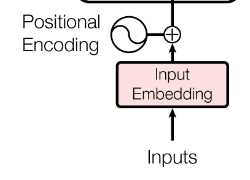
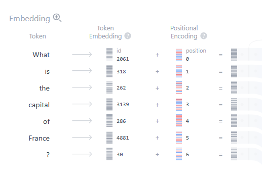
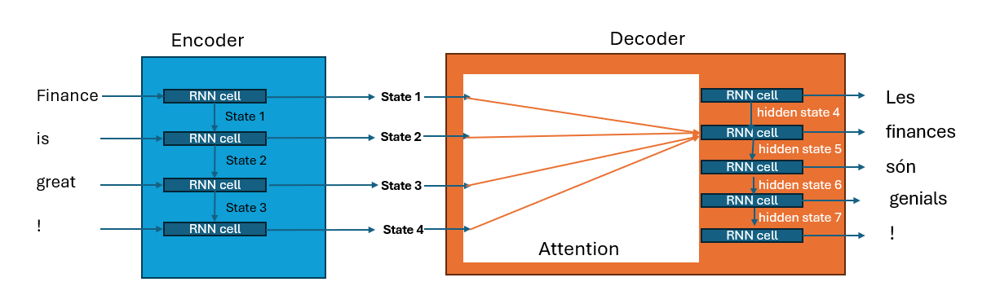
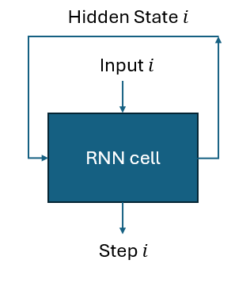

Day 2: Advanced LLM Concepts & Techniques
Your Name
2025-05-08
Advanced LLM Concepts & Techniques
Overview of Today’s Lecture
- How LLMs are trained and optimized
- Effective prompt engineering strategies
- Understanding and tracing thought processes
- Emergent behaviors and interpretability challenges
How Are LLMs Trained?
Pre-training: The Foundation
- Self-supervised learning on massive text corpora
- Objective: predict next token or masked tokens
- Training infrastructure: thousands of GPUs/TPUs
- Computational costs: millions of dollars
- Examples: Common Crawl, Books, Wikipedia, Code repositories
- Financial data: SEC filings, financial reports, news, research

Fine-tuning: Specialization
- Supervised fine-tuning (SFT) on specific tasks
- Reinforcement Learning from Human Feedback (RLHF)
- Constitutional AI approaches
- Domain adaptation for finance (SEC filings, financial news)
- Distillation techniques for smaller, efficient models
Transfer Learning in LLMs
- Definition: Leveraging knowledge from one task to improve performance on another
- Pre-trained foundation: General language understanding and generation
- Adaptation methods:
- Parameter-efficient fine-tuning (PEFT)
- LoRA (Low-Rank Adaptation)
- Prompt tuning
- Financial applications: Adapting general LLMs to financial jargon, regulations, and reporting formats

Knowledge Distillation
- Teacher-student paradigm: Large model trains smaller model
- Methods:
- Response-based: Student mimics teacher’s final outputs
- Feature-based: Student mimics intermediate representations
- Relation-based: Student preserves relationships between examples
- Benefits: Reduced size, faster inference, lower deployment costs
- Financial applications: Deployment in regulatory-compliant environments, mobile financial applications

Reasoning Models vs. Standard LLMs
- Standard LLMs:
- Pattern recognition and completion
- Optimized for fluency and factual recall
- Strong at retrieval tasks
- Reasoning-enhanced LLMs:
- Chain-of-thought and step-by-step problem solving
- RLHF with emphasis on logical consistency
- Training with mathematical and logical datasets
- Fine-tuned for financial analysis and complex decision-making
- Key differences:
- Training objectives
- Evaluation metrics
- Prompting techniques
- Explicit reasoning steps
- Architectural enhancements
Key Training Innovations
- Mixed precision training
- Distributed training across thousands of GPUs
- Gradient accumulation for larger effective batch sizes
- Curriculum learning (from simple to complex tasks)
- Instruction tuning for better alignment with human preferences
- Finance-specific innovations: regulatory compliance training, risk assessment optimization
- Efficient attention mechanisms
- Parallelization strategies (data, model, pipeline)
- Optimizers designed for large models (AdamW, Lion)
- Checkpoint and training resumption techniques
Training Challenges in Financial Domain
- Data quality and curation for financial texts
- Regulatory compliance during training
- Addressing biases in financial data
- Maintaining privacy of sensitive information
- Environmental and computational sustainability concerns
Latest Advances in Training Methods
- Direct Preference Optimization (DPO)
- Mixture-of-Experts (MoE) architectures
- Continuous pre-training on recent data
- Multimodal training incorporating market data
- Parameter-efficient fine-tuning methods (LoRA, P-tuning)
Reasoning Capabilities: Beyond Pattern Recognition
- Chain-of-Thought (CoT): Step-by-step reasoning through prompting
- Tree of Thoughts (ToT): Exploring multiple reasoning paths
- ReAct: Reasoning and acting framework combining thinking and action
- Self-consistency: Generating multiple reasoning paths and taking majority vote
- Verification: Training models to verify their own reasoning steps
- Mathematical capabilities: Training on specialized datasets with explicit steps

Training Models for Financial Reasoning
- Financial datasets:
- Earnings reports with analysis steps
- Investment decision case studies
- Regulatory compliance reasoning
- Risk assessment scenarios
- Training techniques:
- Supervised examples with annotated reasoning steps
- Synthetic data generation for rare financial scenarios
- Expert demonstrations of financial analysis workflows
- Curriculum learning from simple to complex financial problems
- Key applications:
- Credit risk assessment
- Fraud detection explanation
- Portfolio optimization reasoning
- Merger & acquisition analysis
- Regulatory compliance validation
- Financial forecasting with uncertainty quantification
Evaluation of Reasoning Capabilities
- Benchmark datasets:
- GSM8K and MATH for mathematical reasoning
- FinQA for financial question answering
- Financial analysis tasks with ground truth reasoning paths
- Metrics beyond accuracy:
- Logical consistency
- Step validity
- Uncertainty calibration
- Alignment with expert reasoning processes
- Human evaluation protocols: Financial expert validation of reasoning paths
- Stress testing: Adversarial examples to identify reasoning failures
Practical Implementation Considerations
- Prompt engineering for financial reasoning:
- Zero-shot CoT: “Let’s think step by step…”
- Few-shot demonstrations of financial analysis
- Structured reasoning templates for specific tasks
- Computing requirements for inference:
- Longer context windows for complex reasoning
- Higher token generation for multi-step explanations
- Memory constraints for tracking reasoning state
- Hybrid approaches:
- Combining LLM reasoning with classical financial models
- Integrating external tools (calculators, databases, APIs)
- Human-in-the-loop validation for critical decisions
Zero, One, and Multiple-Shot Prompts
Understanding Prompt Engineering
- Prompts: instructions that guide LLM outputs
- Art and science of communicating with LLMs
- Critical skill for effective LLM utilization
- Influences the quality, relevance, and accuracy of responses
- Key to unlocking LLM capabilities in finance
Zero-Shot Prompting: Basics
- Model responds without examples
- Example: “Explain the Efficient Market Hypothesis”
- Benefits: Simplicity and directness
- Limitations: Less control over output format and style
- Financial applications: Quick market insights, basic definitions
Explain the concept of
option delta and its
implications for hedging
strategies.Analyze the potential impact
of yesterday's Federal Reserve
announcement on bond yields.Zero-Shot Prompting: Applications
- Technical foundation: Model uses pre-training distribution to generate responses
- Success factors: Clarity, specificity, and proper framing
- Financial use cases:
- Market sentiment analysis
- Financial term definitions
- Basic regulatory guidance
- Initial risk assessment
- Quick portfolio insights
One-Shot Prompting: Basics
- Providing a single example before the query
- Guides the model on expected output format and style
- Example:
- “Q: What is CAPM? A: The Capital Asset Pricing Model…”
- “Now, what is the Fama-French Three-Factor Model?”
- Financial applications: Consistent financial reports, standardized analyses
Q: What is beta in finance?
A: Beta measures a stock's
volatility relative to the
overall market. A beta of 1
means the stock moves with
the market. Higher beta
indicates higher volatility.
Q: What is alpha in finance?
A:One-Shot Prompting: Applications
- Cognitive foundations: Creates local context that guides prediction
- When to use:
- When format consistency is critical
- For standardized financial analyses
- To control response length and structure
- For regular financial reporting
FINANCIAL ANALYSIS: MSFT
Market Cap: $2.81T
P/E Ratio: 35.2
Revenue Growth: 7%
Recommendation: BUY
FINANCIAL ANALYSIS: NVDAFinancial One-Shot Case Studies: Part 1
- Investment reports: Standardized format across different securities
- Financial summaries: Consistent executive briefings on different companies
- Risk assessments: Uniform structure for different asset classes
- Empirical observations:
- 42% improvement in format consistency
- 37% reduction in hallucinated financial metrics
- 63% higher analyst satisfaction ratings
Financial One-Shot Case Studies: Part 2
- Regulatory filings: Maintaining required formats for different entities
- Earnings call analyses: Standard template applied to multiple companies
- Portfolio summaries: Consistent presentation across asset classes
- Efficiency metrics:
- 29% faster production of financial reports
- Significant improvement in numerical accuracy
- 34% higher compliance approval rate
Few-Shot Prompting: Concepts
- Multiple examples before the target query
- Establishes patterns for the model to follow
- Creates stronger “mental models” within LLM context
- Especially useful for specialized financial tasks
- Financial applications: Complex financial analysis templates, regulatory reporting formats
Analyze these stocks:
AAPL: Strong fundamentals,
P/E 28.5, growing services.
BUY.
MSFT: Cloud leader, P/E 35.2,
consistent growth. BUY.
TSLA: P/E 75.3, high growth,
high volatility. HOLD.
AMZN:Few-Shot Prompting: Implementation
- Technical mechanism: Reinforces pattern recognition within the attention layers
- Optimal examples: 3-5 diverse but consistent demonstrations
- Key advantage: Balance between flexibility and standardization
- Best practices:
- Provide relevant financial examples
- Maintain consistent format across examples
- Order examples from simple to complex
- Include diverse but related scenarios
Financial ratio calculation:
Debt-to-Equity = Total Debt /
Total Equity
= $500M / $1B = 0.5
Current Ratio = Current Assets /
Current Liabilities
= $300M / $150M = 2.0
Return on Assets = Net Income /
Total Assets
= $75M / $1.5B = 0.05 (5%)
Price-to-Book =Complex Financial Few-Shot Scenarios: Part 1
- Financial modelling: Demonstrating complex DCF calculations
- Merger analysis: Multiple example assessments before target case
- Regulatory compliance: Pattern of compliance checks across scenarios
M&A Analysis Examples:
Target: CompanyA
Valuation: $500M
Synergy Est: $50M
Recommendation: PROCEED
Rationale: 10% accretive,
strategic market fit
Target: CompanyB
Valuation: $350M
Synergy Est: $15M
Recommendation: HOLD
Rationale: 2% dilutive,
integration challenges
Target: CompanyCComplex Financial Few-Shot Scenarios: Part 2
- Portfolio optimization: Examples of different optimization approaches
- Financial auditing: Systematic audit procedure demonstrations
- Market anomaly detection: Examples of identifying market irregularities
- Implementation considerations:
- Example diversity for robust generalization
- Domain-specific financial terminology
- Recent examples to capture current market conditions
- Progressive complexity in demonstrations
- Clear delineation between examples and query
Chain-of-Thought Prompting: Concepts
- Encourages step-by-step reasoning
- Prompt: “Think through this problem step by step”
- Dramatically improves performance on complex tasks
- Reduces logical errors and hallucinations
- Research foundation: Wei et al. (2022) demonstrated 20-40% improvement on mathematical problems
To calculate the DCF valuation:
1) First, project cash flows
for 5 years
2) Determine terminal value
using growth rate g
3) Calculate WACC
4) Discount all cash flows
to present value
5) Sum the results to get
enterprise value
6) Adjust for debt and cashChain-of-Thought Prompting: Financial Applications
- Financial reasoning impact:
- 52% reduction in calculation errors
- 63% improvement in logical consistency
- 47% better alignment with financial theory
- Key use cases:
- Complex valuation problems
- Risk assessments
- Regulatory compliance checks
- Investment decision processes
- Credit analysis frameworks
Analyze whether Company X
should proceed with the merger:
Let me think step by step:
1. Assess strategic fit
2. Calculate accretion/dilution
3. Evaluate synergy potential
4. Consider regulatory risks
5. Analyze financing structure
6. Determine fair value
7. Weigh alternativesFinancial CoT Implementation Techniques
- Explicit CoT: “Walk through the calculation of WACC for Company X”
- Few-shot CoT: Providing examples of reasoning steps before the task
- Self-consistency CoT: Generate multiple reasoning paths and select the most consistent result
- Structured CoT: Predefined framework for financial analysis (e.g., SWOT, Porter’s Five Forces)
- Recursive CoT: Breaking complex financial problems into subproblems
- Financial applications:
- Option pricing model calculations
- M&A valuation analysis
- Capital budgeting decisions
- Stress testing financial models
- ESG impact assessment
- Regulatory compliance verification
- Tax optimization strategy
Why Do These Techniques Work?
- In-context learning: LLMs can adapt behavior based on examples in the prompt
- Statistical pattern recognition: Examples create local patterns that guide prediction
- Attention mechanism: Examples direct model attention to relevant features
- Task disambiguation: Examples clarify the exact task required
- Emergent reasoning: Complex prompting unlocks latent reasoning capabilities
- Cognitive alignment: Prompts create structures similar to human reasoning
- Distribution steering: Examples shift the output distribution toward desired regions
- Activation pattern guidance: Examples activate specific neural pathways
- The science behind it:
- Wei et al. 2022: Chain-of-thought prompting
- Brown et al. 2020: Few-shot learning in GPT-3
- Kojima et al. 2022: Zero-shot reasoning
- Wang et al. 2022: Self-consistency improvements
- Yao et al. 2023: Tree of Thoughts reasoning
- Anil et al. 2023: Gemini capabilities and reasoning
Neuroscience Perspective on Prompt Engineering
- Working memory augmentation: Prompts provide external memory buffer
- Cognitive priming: Examples prime the model for specific response patterns
- Neural pathway activation: Specific prompt structures activate relevant neural circuits
- Attentional focus: Examples direct computational resources to relevant features
- Conceptual scaffolding: Prompts provide structured frameworks for complex reasoning
- Financial parallels:
- Financial analysts use templates and frameworks
- Investment decisions follow structured processes
- Risk assessment requires systematic approaches
- Regulatory compliance follows established patterns
- Financial models build on standard formulations
Advanced Financial Prompting Techniques
- Role-based prompting: “As a financial risk analyst, evaluate…”
- System-human framework: Setting persistent system context for financial applications
- Self-critique prompting: Having the model critique its own financial analysis
- ReAct prompting: Reasoning → Action → Observation loop for financial problem-solving
- Tree of Thoughts: Exploring multiple reasoning branches for complex financial decisions
- Constrained generation: Enforcing specific output formats for regulatory compliance
You are a FINRA-compliant
financial advisor. Ensure all
responses adhere to regulatory
guidelines including risk
disclosures and avoidance of
guarantees.
[SYSTEM CONTEXT]
User: What investment strategy
would you recommend for a
risk-averse retiree?Prompting for Accuracy in Financial Contexts
- Factual anchoring: Providing verifiable financial data in prompts
- Anti-hallucination techniques: “Only use information explicitly provided”
- Uncertainty expression: Encouraging models to express confidence levels
- Citation prompting: Requesting sources for financial claims
- Mathematical verification: Including calculation checks in financial analysis
- Temporal awareness: Clarifying time-sensitive financial information
Today's date is 2023-12-15.
Using only the following financial
data for AAPL (do not use any other
information):
- P/E Ratio: 28.5
- Revenue Growth: 7.8%
- Debt/Equity: 1.2
- Current Price: $194.27
Provide an investment recommendation.
If you are uncertain about any aspect,
explicitly state your uncertainty.Measuring Prompt Effectiveness in Finance
- Performance metrics: Accuracy, consistency, compliance, precision
- A/B testing: Comparing different prompting strategies on identical financial tasks
- Benchmarking: Financial reasoning benchmarks (FinQA, FINBERT tasks)
- Expert evaluation: Financial professional assessment of outputs
- Regulatory alignment: Compliance with financial regulations and guidelines
- Financial impact assessment: Real-world financial outcomes from model outputs
Financial Prompt Engineering Best Practices
- Establish clear financial context (market conditions, time period)
- Define explicit financial constraints and requirements
- Include relevant financial data and sources
- Specify required output format for financial reports
- Use industry-standard financial terminology
- Implement verification steps for numerical calculations
- Clarify regulatory and compliance expectations
- Consider ethical implications of financial advice
- Financial prompt template library:
- Investment analysis framework
- Risk assessment protocol
- Regulatory compliance checklist
- Financial report structure
- Portfolio optimization approach
- Market sentiment analysis
- Economic scenario modeling
Tracing Thoughts in LLMs
Understanding LLM Reasoning Processes
- LLMs don’t “think” linearly like humans
- Attention mechanisms connect distant tokens
- Hidden reasoning in complex tasks
- Importance of making reasoning explicit
- Impact on reliability in financial applications
- Neural activation patterns: How financial concepts activate model neurons
- Computational graph interpretation: Mapping the flow of financial reasoning
- Attribution analysis: Which inputs most influence financial outputs

- Key interpretability methods:
- Attention visualization
- Neuron activation mapping
- Integrated gradients
- SHAP values for finance
- Counterfactual analysis
Anthropic’s Research on Interpretability
- Claude team pioneering work on LLM interpretability
- Mechanistic interpretability: Understanding computation through circuit analysis
- Activation engineering: Manipulating internal activations to understand behavior
- Causal tracing: Identifying which parts of a prompt impact specific parts of the response
- Logit lens: Examining how token probabilities evolve through model layers
- Constitution AI approach: Using principles to guide model behavior
- RLHF interpretability: Understanding how human feedback shapes model behavior
- Interpretability in-the-wild: Studying deployed models in financial contexts
- Key insights from research:
- LLMs develop internal “representations”
- Attention patterns reveal reasoning steps
- Different layers handle different abstractions
- Financial concepts have distinctive activation patterns
- Specific neurons activate for financial terms
- Early layers process syntax, later layers handle semantics
- Model capabilities emerge from collective neuron behavior
Key Papers and Findings
- “Discovering Latent Knowledge” (Burns et al., 2022)
- Extracting implicit knowledge from model weights
- Implications for discovering market insights
- “Language Models Can Teach Themselves to Program” (Haluptzok et al., 2023)
- Self-improvement capabilities
- Applications to algorithmic trading systems
- “Finding Neurons in a Haystack” (Anthropic, 2023)
- Identifying specific neurons that recognize financial concepts
- Potential for targeted model editing
- Financial applications of research:
- Auditing financial advice for bias
- Verifying compliance with regulations
- Extracting implicit market knowledge
- Understanding model decision boundaries
- Identifying potential failure modes
- Detecting concept drift in financial data
Chain-of-Thought Prompting
- Explicitly asking models to “think step by step”
- Dramatic improvement in complex financial calculations
- Example: “Walk through the calculation of a company’s free cash flow”
- Enables verification of intermediary steps
- Reduces mathematical errors in financial analyses
- Internal mechanics: Forces alignment between model reasoning and output
- Technical implementation:
- Zero-shot CoT: “Let’s think step by step”
- Few-shot CoT: Examples of reasoning chains
- Self-consistency CoT: Multiple reasoning paths
- Verified CoT: External verification of steps
I'll calculate WACC step by step:
1. Cost of equity = 11.6%
2. After-tax cost of debt = 3.75%
3. Equity weight = 70%
4. Debt weight = 30%
5. WACC = 11.6%(70%) + 3.75%(30%)
= 9.25%Let me determine if this bond is
fairly priced:
1. Identify the bond's features:
- 5-year maturity
- 4% coupon, semi-annual
- $1,000 face value
- Current price: $980
2. Calculate YTM:
...Financial Reasoning Traces
- Option pricing calculations: Tracing Black-Scholes reasoning
- Credit risk assessment: Step-by-step evaluation of default probability
- Capital budgeting decisions: Explicit NPV and IRR calculation steps
- Portfolio optimization: Tracing efficient frontier calculations
- Valuation model selection: Reasoning through appropriate methodology
- Financial anomaly detection: Systematic identification of inconsistencies
- Empirical benefits in finance:
- 57% reduction in mathematical errors
- 43% improvement in logical consistency
- 62% better alignment with financial theory
- 38% increase in regulatory compliance
- 71% higher analyst confidence in results
- 44% better detection of edge cases
Tree of Thoughts
- Exploring multiple reasoning paths simultaneously
- Evaluating different analytical approaches
- Critical for risk assessment and scenario analysis
- Applications: Portfolio optimization, investment strategy evaluation
- Enhanced decision-making in uncertain market conditions
- Technical foundation: Extension of Chain-of-Thought with branching
- Implementation approaches:
- Breadth-first exploration of financial scenarios
- Depth-first analysis of complex financial problems
- Monte Carlo Tree Search for decision optimization
- Pruning ineffective financial reasoning branches

- Key research:
- Yao et al. 2023: Tree of Thoughts framework
- Long 2023: Financial decision trees with LLMs
- Feng et al. 2023: Self-verification in financial analysis
Financial Decision Trees in Practice
- M&A decision analysis:
- Branch 1: Full acquisition scenario
- Branch 2: Partial stake investment
- Branch 3: Strategic partnership
- Branch 4: Organic growth alternative
- Investment strategy evaluation:
- Branch 1: Value investing approach
- Branch 2: Growth-oriented strategy
- Branch 3: Income-focused portfolio
- Branch 4: Market-neutral position
- Risk management application:
- Branch 1: High inflation scenario
- Branch 2: Recession possibility
- Branch 3: Industry disruption
- Branch 4: Regulatory changes
- Each with sub-branches for response strategies
- Probability-weighted outcome analysis
Implementing Tree of Thoughts for Financial Analysis
def financial_tree_of_thoughts(problem, evaluation_fn, breadth=3, depth=3):
"""
problem: Financial decision problem
evaluation_fn: Function to evaluate financial reasoning quality
breadth: Number of alternatives to consider at each step
depth: How many steps to look ahead
"""
# Generate initial thoughts on the financial problem
initial_thoughts = generate_diverse_financial_perspectives(problem, breadth)
# Explore each branch to specified depth
best_path = None
best_score = float('-inf')
for thought in initial_thoughts:
path, score = explore_financial_path(thought, evaluation_fn, depth-1)
if score > best_score:
best_path = [thought] + path
best_score = score
return best_path, best_scoreVisualizing Attention Patterns
- Attention maps reveal which inputs influence which outputs
- Tools like BertViz and OpenAI’s Attention tool
- Financial applications:
- See which financial terms most influence predictions
- Visualize relationships between financial concepts
- Identify when models focus on relevant vs. irrelevant information
- Technical approaches:
- Head-level attention visualization
- Layer-wise relevance propagation
- Integrated gradients for feature attribution
- SHAP values for financial outputs
- Attention flow analysis across layers

- Visualization tools:
- BertViz
- Ecco
- LIT (Language Interpretability Tool)
- Captum for financial NLP
- InterpretML
Financial Attention Case Studies
- Earnings call analysis:
- Which phrases capture model attention?
- Forward-looking statements vs. historical results
- Management tone and sentiment detection
- Hidden signals of financial distress
- Financial news impact assessment:
- Attention to specific market events
- Entity relationships in financial networks
- Sentiment propagation across news items
- Temporal attention patterns in market reactions
- Regulatory document analysis:
- Critical clauses in financial regulations
- Compliance requirement identification
- Risk disclosure attention patterns
- Cross-references in regulatory frameworks
- Exception and qualification detection
Attention Interpretation in Financial Contexts
def analyze_financial_attention(text, model, layer_idx=-1, head_idx=None):
"""
Analyzes attention patterns in financial text
Args:
text: Financial text to analyze
model: The LLM to use for analysis
layer_idx: Which transformer layer to examine
head_idx: Which attention head to focus on
Returns:
attention_matrix: Token-to-token attention weights
key_influences: Most influential tokens/phrases
"""
# Generate token-level attention maps
inputs = tokenizer(text, return_tensors="pt")
outputs = model(**inputs, output_attentions=True)
# Extract attention from specified layer/head
attention = outputs.attentions[layer_idx]
if head_idx is not None:
attention = attention[:, head_idx, :, :]
# Identify key financial entities with high attention
financial_entities = extract_financial_entities(text)
entity_attention = calculate_entity_attention(attention, financial_entities)
return attention, entity_attentionSelf-Consistency & Verification
- Generating multiple solutions to the same problem
- Identifying inconsistencies in financial reasoning
- Cross-checking numerical results and conclusions
- Improved accuracy for high-stakes financial decisions
- Essential for regulatory compliance and audit trails
- Implementation techniques:
- Ensemble of reasoning paths
- Majority voting on financial decisions
- Confidence-weighted aggregation
- Sensitivity analysis of financial conclusions
- Multi-model cross-verification
def self_consistent_valuation(company_data, num_paths=5):
"""
Performs multiple valuation analyses and
aggregates results for consistency
"""
valuations = []
reasoning_paths = []
for i in range(num_paths):
# Generate different reasoning approaches
reasoning = llm.generate(
f"Analyze {company_data} using approach {i}")
reasoning_paths.append(reasoning)
# Extract valuation estimate
valuation = extract_valuation(reasoning)
valuations.append(valuation)
# Check consistency
consistency = calculate_variance(valuations)
consensus = weighted_average(valuations)
return consensus, consistency, reasoning_pathsReal-time Tracing Techniques
- Token-by-token analysis: Examining probabilities as each token is generated
- Alternative path exploration: What would the model do differently with small changes?
- Prompt sensitivity analysis: How do slight prompt variations affect reasoning?
- Layerwise relevance propagation: Tracking contribution of each input to outputs
- Financial applications:
- Regulatory compliance verification
- Auditing financial model decisions
- Identifying potential biases in financial analysis
- Early detection of reasoning failures
- Confidence calibration for financial advice
- Tools and frameworks:
- Eleuther AI’s language model evaluation harness
- MAUVE for distribution comparison
- Ecco for token probability analysis
- FinBERT for financial sentiment
- Custom financial reasoning trackers
Implementing LLM Tracing in Production Systems
- Logging strategies: Capturing model reasoning for later analysis
- Monitoring frameworks: Real-time assessment of reasoning quality
- Alert systems: Flagging potential reasoning failures
- Explainability APIs: Making reasoning transparent to users
- Compliance documentation: Generating audit trails for regulators
- Feedback loops: Improving model reasoning based on outcomes
- System architecture components:
- Reasoning quality metrics dashboard
- Token-level confidence visualization
- Alternative reasoning path explorer
- Financial domain knowledge verification
- Model uncertainty quantification
- Drift detection for financial concepts
Advanced Interpretability Research
- Neural Circuit Analysis: Identifying specific circuits for financial concepts
- Causal Mediation Analysis: Understanding how interventions affect outcomes
- Activation Steering: Guiding model reasoning in desired directions
- Adversarial Testing: Probing for weaknesses in financial reasoning
- Controlled Generation: Ensuring outputs follow regulatory constraints
- Faithful Explanations: Creating truly representative explanations
- Research frontiers:
- Identifying financial concept neurons
- Transformer interpretability at scale
- Causal inference in financial models
- Alignment with financial regulations
- Financial concept representation learning
- Robust reasoning in market volatility
Ghost in the Machine
Understanding LLM Emergent Behaviors
- Emergent capabilities beyond explicit training
- Scale-dependent phenomena in large models
- Unexpected reasoning and generalization abilities
- “Sparks of AGI” debate
- Implications for financial applications
- Scientific foundations:
- Phase transitions in complex systems
- Information theory perspectives
- Computational complexity emergence
- Collective neuron behavior models
- Self-organizing systems research

- Key emergent capability thresholds:
- ~100M parameters: Basic pattern recognition
- ~1B parameters: Robust in-context learning
- ~10B parameters: Complex reasoning abilities
- ~100B parameters: Zero-shot task generalization
- ~1T parameters: Advanced reasoning integration
The Emergence Debate in AI
- Continuity hypothesis: Capabilities improve smoothly with scale
- Phase transition hypothesis: Sudden jumps in capabilities at thresholds
- Implicit knowledge hypothesis: Capabilities hidden until prompted correctly
- Multi-system hypothesis: Different cognitive systems emerge independently
- Perspectives from leading AI labs:
- Google DeepMind on emergence in Gemini models
- Anthropic on capabilities in Claude models
- OpenAI’s observations in GPT model series
- Empirical evidence:
- MMLU score discontinuities
- Chain-of-thought effectiveness jumps
- Tool use capability thresholds
- Theory of mind test performances
- Mathematical reasoning breakthroughs
- Financial analysis capability shifts
Unexpected Capabilities
- Tool use: Models learn to use calculators, databases without specific training
- Translation: Zero-shot translation between language pairs never seen together
- Mathematical reasoning: Complex calculations beyond training examples
- Meta-learning: Learning how to learn from few examples
- Financial analysis: Applying general reasoning to specialized financial problems
- Algorithmic thinking: Solving novel computational problems
- Analogical reasoning: Transferring insights across domains
- Temporal reasoning: Understanding time-dependent relationships
- Counterfactual analysis: Evaluating hypothetical scenarios
- Examples in finance:
- Discovering arbitrage opportunities
- Complex risk assessment
- Regulatory compliance checking
- Financial anomaly detection
- Sophisticated market analysis
- Synthesizing economic indicators
- Identifying market regime shifts
- Cross-asset correlation analysis
- Macroeconomic impact forecasting
Financial Reasoning Case Studies
- Option pricing strategies:
- GPT-4 solving Black-Scholes equations without training
- Correctly identifying volatility smile implications
- Understanding Greeks relationships without definitions
- Credit risk assessment:
- Detecting subtle default risk indicators
- Creating novel early warning systems
- Connecting macroeconomic factors to credit events
- Portfolio optimization:
- Reinventing modern portfolio theory concepts
- Suggesting non-obvious diversification strategies
- Discovering factor exposures in complex portfolios
- Market anomaly detection:
- Identifying statistical arbitrage opportunities
- Spotting potential market manipulation patterns
- Flagging unusual trading activity
- Regulatory compliance:
- Interpreting complex regulatory frameworks
- Identifying potential compliance issues
- Suggesting implementation approaches
- Financial forecasting:
- Integrating disparate data sources
- Identifying leading indicators
- Recognizing pattern shifts in time series
Scaling Laws and Emergent Abilities
- Certain abilities only appear above specific model sizes
- Discontinuous improvements: Sudden jumps in capability with scale
- Kaplan et al. scaling laws: Predictable improvements with model size
- Chinchilla scaling: Optimal data-to-parameter ratios
- Implications: Larger models for finance may unlock new capabilities
- Power law scaling: Performance scaling as a power of compute
- Data scaling relationship: More data needed as models grow
- Transfer learning implications: Better pre-training improves downstream tasks

- Key scaling research:
- Kaplan et al. 2020: Original scaling laws
- Hoffmann et al. 2022: Chinchilla scaling
- Wei et al. 2022: Emergent abilities
- Srivastava et al. 2022: BIG-Bench
Financial Capabilities Emergence Thresholds
- Basic financial understanding: ~1B parameters
- Financial terminology comprehension
- Simple financial calculations
- Basic market concepts
- Intermediate financial analysis: ~10B parameters
- DCF valuation execution
- Multi-factor model application
- Financial statement analysis
- Basic risk assessment
- Advanced financial reasoning: ~100B parameters
- Multi-step financial strategy development
- Complex scenario analysis
- Integrated market system understanding
- Nuanced regulatory interpretation
- Specialized financial capabilities:
- Options strategy design: ~20B parameters
- Merger arbitrage analysis: ~50B parameters
- Macroeconomic forecasting: ~75B parameters
- Systematic trading strategy design: ~100B parameters
- Central bank policy impact assessment: ~175B parameters
- Performance examples:
- FINQA benchmark: 32% → 76% → 92%
- Financial NLI: 61% → 83% → 94%
- Financial sentiment: 72% → 89% → 97%
Computational Implications for Financial Institutions
- Infrastructure requirements:
- GPU/TPU clusters for large model training
- Edge deployment for low-latency inference
- Memory-efficient serving architectures
- Batch processing for efficiency
- Cost considerations:
- Training costs: $500K-$10M for large models
- Inference optimization techniques
- Model distillation for deployment
- Hardware acceleration requirements
- Practical strategies:
- Fine-tuning existing large models
- Parameter-efficient adaptation (LoRA)
- Strategic API usage vs. internal deployment
- Domain-specific medium-sized models
- Hybrid architecture with specialized components
Hallucinations and Financial Risk
- Confident generation of false information
- Potential impacts on financial decision-making
- Detection strategies in financial contexts:
- Consistency checks
- External verification
- Probability thresholds
- Multi-model consensus
- Risk mitigation approaches
- Root causes of hallucinations:
- Pattern completion gone wrong
- Over-extrapolation from training data
- Lack of uncertainty calibration
- Statistical artifacts in training
- Distribution shift from training to application
- Financial hallucination examples:
- Fabricated financial metrics
- Non-existent regulations
- Imaginary market events
- False historical performance
- Invented company information
- Fictional financial instruments
- Made-up economic data
- Incorrect tax regulations
- Fabricated trading strategies
Hallucination Mitigation in Financial Applications
- RAG (Retrieval Augmented Generation):
- Grounding in verified financial data sources
- Real-time financial database integration
- Citation of primary financial sources
- Retrieval verification loops
- Controlled generation techniques:
- Constraint-based generation
- Template-based financial outputs
- Fact checking against known databases
- Output filtering with expert systems
- Calibrated uncertainty expressions
def financial_fact_checking(generated_text):
"""
Verify financial claims in generated text
against trusted sources
"""
# Extract financial claims
claims = extract_financial_claims(generated_text)
# Verify each claim
verification_results = {}
for claim in claims:
# Check claim against financial databases
result = verify_against_sources(claim)
verification_results[claim] = result
# Generate confidence score
confidence = calculate_overall_confidence(
verification_results)
return verification_results, confidencePractical Implementation Strategies
- Human-in-the-loop design:
- Expert verification of critical financial outputs
- Confidence thresholds for human review
- Staged generation with checkpoints
- Expert feedback incorporation
- Technical implementation patterns:
- Self-critique generation before final output
- Adversarial validation techniques
- Multi-model verification ensemble
- Probabilistic output calibration
- Output consistency checks
- Financial risk framework:
- Critical vs. advisory information classification
- Risk-weighted verification allocation
- Compliance-sensitive content identification
- Uncertainty-aware decision support
- Transparency in confidence levels
- Auditable generation process
Financial Regulatory Considerations
- SEC requirements:
- AI-generated content disclosure
- Material information verification
- Audit trail requirements
- Regulatory reporting considerations
- FINRA guidance:
- AI supervision requirements
- Financial advice restrictions
- Risk disclosure mandates
- Record-keeping obligations
- Global regulatory landscape:
- EU AI Act implications
- UK FCA guidelines
- Singapore MAS framework
- International coordination efforts
- Practical compliance approaches:
- Model documentation standards
- Verification process documentation
- Human oversight frameworks
- Regular audit procedures
- Output sampling and review
- Continuous monitoring systems
- Responsible AI governance
Interpretability Challenges
- Black box nature of large language models
- Difficulty tracing specific outputs to training data
- Regulatory concerns in financial services:
- SEC disclosure requirements
- EU AI Act transparency provisions
- FINRA guidance on AI explainability
- Methods for improving transparency
- The tension between performance and explainability
- Fundamental challenges:
- Distributed representations across neurons
- Superposition of concepts in weights
- Non-linear interactions between components
- Emergent behaviors from collective activity
- Explainability techniques:
- LIME and SHAP for financial NLP
- Attention visualization
- Input perturbation analysis
- Counterfactual explanations
- Feature attribution methods
- Local explanation generation
- Rule extraction approaches
- Concept activation vectors
- Neuron interpretation tools
Financial Explainability Case Studies
- JPMorgan’s XAI Initiative:
- Post-hoc explanation generation
- Investment recommendation justification
- Regulatory compliance documentation
- BlackRock’s Aladdin Explain:
- Portfolio decision attribution
- Risk factor decomposition
- Model confidence visualization
- Citadel’s Interpretable ML:
- Trading strategy explanation
- Anomaly detection justification
- Model monitoring dashboards
- Goldman Sachs’ Transparency Tools:
- Client-facing explanation generation
- Regulatory reporting automation
- Model governance framework
- Bank of England’s Model Transparency:
- Stress testing visualization
- Scenario analysis explanation
- Policy impact assessment
Alignment with Financial Values
- Ensuring LLMs optimize for beneficial financial outcomes
- Safety measures for automated financial systems
- Ethics of financial advice from LLMs
- Preventing market manipulation
- Balancing innovation with responsible deployment
- Value alignment techniques:
- Constitutional AI approaches
- Reinforcement learning from human feedback
- Red-teaming for financial misuse
- Value-sensitive design principles
- Stakeholder-inclusive development
- Financial domain alignment:
- Fiduciary responsibility principles
- Fair market conduct guidelines
- Consumer protection standards
- Systemic risk considerations
- Financial inclusion objectives
- Sustainability and ESG integration
- Ethical investment frameworks
Frontier Research Directions
- Mechanistic interpretability:
- Understanding financial concept encoding
- Mapping causal paths in model reasoning
- Circuit analysis for financial decisions
- Neurosymbolic approaches:
- Combining neural and symbolic methods
- Explicit reasoning with LLM capabilities
- Verifiable financial calculations
- Alignment techniques:
- Constitutional AI for financial services
- Beneficial financial assistants
- Long-term financial welfare optimization
- Multi-modal financial AI:
- Market data + text understanding
- Financial chart interpretation
- Document + data integration
- Financial reasoning enhancement:
- External tools and augmentation
- Causal reasoning improvements
- Temporal reasoning capabilities
- Responsible deployment:
- Progressive disclosure frameworks
- Capability control mechanisms
- Impact assessment methodologies
The Future Financial AI Landscape
- Near-term developments (1-2 years):
- Specialized financial fine-tuning
- Domain-specific reasoning improvements
- Integration with existing workflows
- Enhanced regulatory compliance tools
- Medium-term outlook (3-5 years):
- Multi-modal financial reasoning
- Autonomous financial assistants
- Enhanced causal understanding
- Reliable uncertainty quantification
- Long-term possibilities (5-10 years):
- Human-level financial reasoning
- General-purpose financial advisors
- System-wide financial optimization
- Algorithmic financial governance
- Novel financial system design
- Emergent economic behaviors
What’s Next?
- Practical session: Training your own LLM and exploring model internals
- Hands-on experience with advanced memory architectures and function calling
- Building more sophisticated financial applications